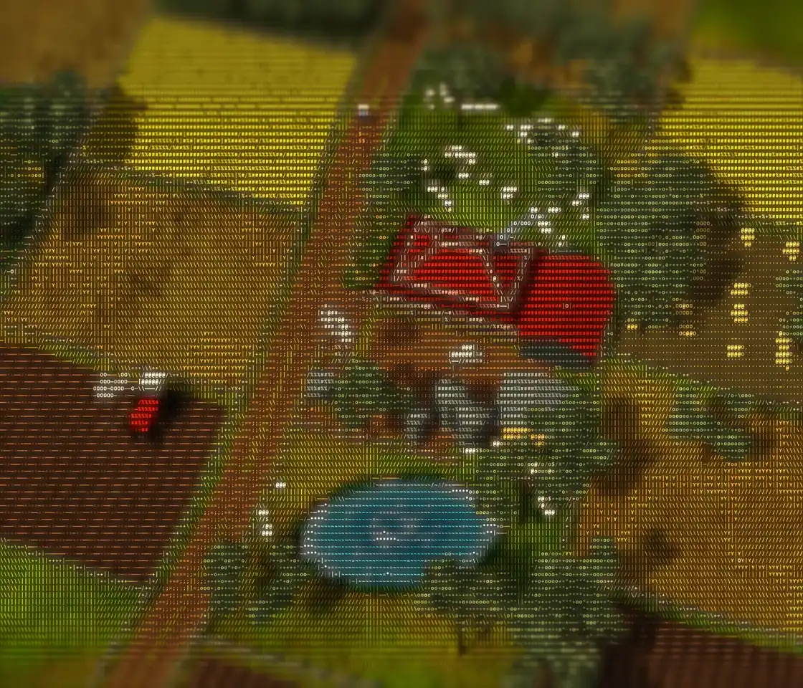

Ten years of NASA data
Plant smarter next season.
Seed Data reads a decade of NASA rain, frost, heat and soil-moisture records for your paddock, then ranks crop rotations on water, soil, risk and income.
Plan your next season
Ten years of NASA data
Seed Data reads a decade of NASA rain, frost, heat and soil-moisture records for your paddock, then ranks crop rotations on water, soil, risk and income.
Plan your next season